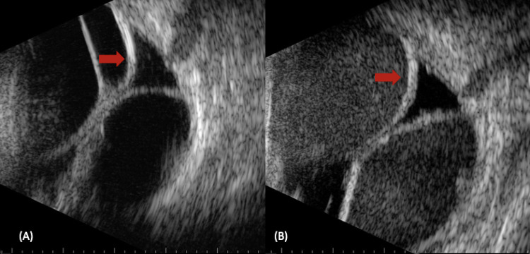
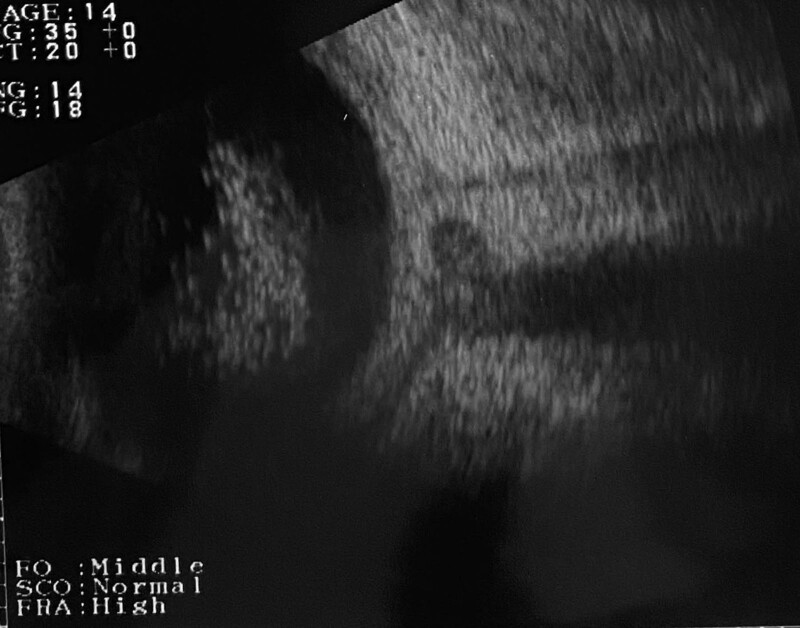
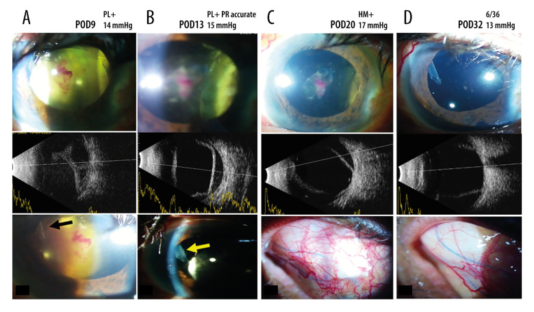
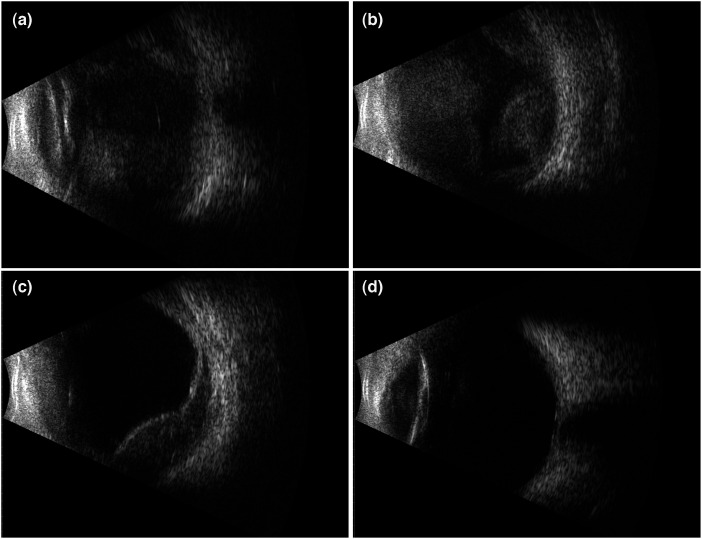
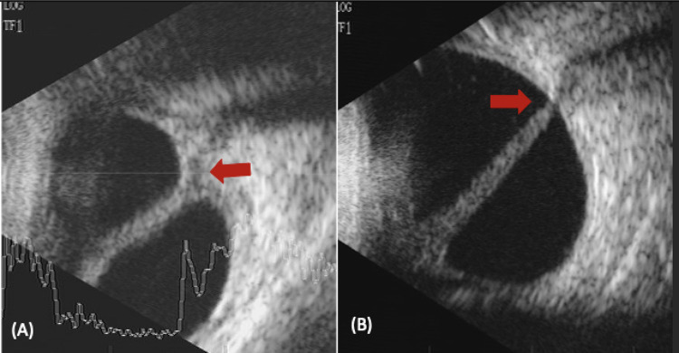

1484 — Bong hắc mạc thanh dịch & xuất huyết dưới hắc mạc sau mổ mắt / Choroidal detachment & suprachoroidal hemorrhage
Tags: pattern:bong-hac-mac pattern:bong-thanh-dich pattern:xuat-huyet-duoi-hac-mac pattern:voi-day-khong-dinh-dia-thi pattern:kissing-choroidals pattern:dau-tam-giac pattern:sau-mo-mat pattern:ha-nhan-ap vung:mat vung:hac-mac vung:tien-phong protocol:sieu-am-B-scan protocol:UBM protocol:CT-hoc-mat protocol:MRI-hoc-mat incidentaloma:khong
Mức chắc chắn (certainty): tổng hợp y văn (literature synthesis) — dựng từ 1 tổng quan hệ thống 38 nghiên cứu/393 mắt (Int J Retina Vitreous 2024, PMC11337774, CC BY 4.0), 2 đoàn hệ–ca loạt (992 mắt trabeculectomy, J Glaucoma 2026, PMC13015807; 21 mắt SCH được mổ, Indian J Ophthalmol 2026, PMC13056044), 3 nghiên cứu/ca loạt có hình ảnh (36 mắt dấu tam giác, Clin Ophthalmol 2025, PMC11766375; 8 mắt bong thể mi trên UBM, Int Ophthalmol 2024, PMC11208247; 5 ca/48.725 ca phaco, J Int Med Res 2025, PMC12041713) và 3 ca lâm sàng (PMC12542795 kissing choroidals với nhãn áp bình thường; PMC13457764 dẫn lưu sớm có rtPA; PMC9302307 viêm củng mạc sau gây bong hắc mạc). Nhóm không có bệnh nhân của mình; chỗ chưa đủ chắc ghi "chưa rõ". Không ghi tên tác giả — attribution dùng tạp chí + năm + PMCID.
Câu chốt: Bong hắc mạc là một khoang, hai chất lỏng: thanh dịch (nước) thường do nhãn áp thấp/viêm và đa số tự khỏi; xuất huyết (máu) thường do áp lực động mạch mi và có thể làm mù trong vài giờ. Ba con số phải thuộc: (1) tràn dịch hắc mạc thanh dịch sau trabeculectomy 5,4% (54/992 mắt) và 79,9% ca hạ áp "số" không có di chứng (PMC13015807); (2) dấu chốt trên siêu âm là vòm dày KHÔNG dính đĩa thị + dấu tam giác 36/36 mắt khi bong toàn bộ (PMC11766375); (3) SCH sau phaco hiện đại 0,03–0,1% (0,01% ở loạt 48.725 ca), nhưng BCVA cuối 2,1 logMAR dù mổ (PMC11337774, PMC12041713, PMC13056044). Cạm bẫy hay gặp nhất: gọi dấu T là dấu của bong hắc mạc — sai, dấu T là dịch dưới bao Tenon của viêm củng mạc sau (PMC9302307).
1. Tổng quan bệnh học – cơ chế hình ảnh
1.1 Giải phẫu: vì sao bong hắc mạc KHÔNG bao giờ vượt qua đĩa thị
Hắc mạc không phải lá tự do: nó dính chắc ở rìa thể mi (scleral spur) phía trước và ở quanh lỗ thị phía sau (nơi động mạch – thần kinh mi ngắn xuyên củng mạc), còn ngoại vi bị tĩnh mạch xoắn (vortex veins) ghì lại. Khoang dưới hắc mạc vì thế là khoang tiềm tàng (potential space), bình thường gần như không tồn tại vì hắc mạc áp sát củng mạc.
Hệ quả hình ảnh — chốt để phân biệt với bong võng mạc:
- Dịch/máu đẩy hắc mạc vào trong thành vòm (dome) dày, nhẵn, đỉnh hướng tâm, dừng trước đĩa thị (để lại một tam giác dịch kính trước đĩa — "dấu tam giác").
- Khi dịch 360°, hai vòm gặp nhau giữa nhãn cầu = "kissing choroidals" (hôn nhau).
- Võng mạc thì chạy tới đĩa thị ở cả hai đầu — đó là lý do "màng dính đĩa thị" = võng mạc, không phải hắc mạc.
1.2 Thanh dịch: chuỗi xoắn ốc làm hạ áp tự duy trì
- Mổ lọc/đặt van làm thủy dịch thoát nhanh → IOP tụt (đoàn hệ 8 mắt: 26,0 ± 7,65 → 6,9 ± 2,64 mmHg ngay ngày 1, PMC11208247).
- Chênh áp xuyên thành mao mạch hắc mạc tăng (định luật Starling) → dịch thoát ra khoang dưới hắc mạc.
- Thể mi cũng bong theo (UBM: bong thể mi 100% ca bong hắc mạc sau mổ glôcôm, 1–4 góc) → giảm sản xuất thủy dịch → hạ áp sâu hơn → vòng xoắn tự duy trì. Đây là lý do bong hắc mạc sau mổ glôcôm không tự hết nhanh như sách giáo khoa mô tả: thời gian hết hoàn toàn 4,3 ± 5,01 tháng (2,7 ± 2,48 khi bỏ 1 ca kéo dài), dù không ca nào phải mổ (PMC11208247).
Con số nền: sau trabeculectomy, tràn dịch hắc mạc thanh dịch 5,4%, tiền phòng dẹt 2,8%, mổ lại vì hạ áp 3,4%; hạ áp "số" (IOP ≤ 5 mmHg ≥ 2 lần) 28,6% nhưng 79,9% trong số đó không di chứng lâm sàng (PMC13015807). Sau van dẫn lưu: 9–35,1% (van có van) và 36,8% (van không van); thắt ống bằng chỉ tiêu làm giảm ca phải can thiệp xuống 2% (PMC12542795). Bệnh hoàng điểm do hạ áp gặp tới 20% sau khi dùng antimetabolite (PMC4675727).
1.3 Xuất huyết: máu vào khoang kín theo áp lực động mạch
IOP tụt đột ngột (mở nhãn cầu, rò vết mổ, needling bọng) → động mạch mi dài/ngắn căng rồi rách → máu phun vào khoang dưới hắc mạc theo huyết áp, đẩy màng thể mi–mống mắt–thể thủy tinh ra trước, IOP tăng vọt, đau dữ dội: thể "expulsive" (bùng phát) trong mổ. Thể trễ (delayed) xảy ra sau mổ 1–5 ngày (có ca tới 8 tuần), đau 1–5 ngày sau mổ, thường sau mổ glôcôm (PMC11337774).
Tần suất theo loại mổ (PMC11337774; PMC13457764): phaco 0,03–0,1% (loạt 48.725 ca: 0,01%), glôcôm 0,15–6,1% (trabeculectomy 0,6–1,4%, van 1,2–2,7%), dịch kính–võng mạc 0,17–1,9%, ghép giác mạc 0,45–1,08%. Needling bọng lọc: xuất huyết trên hắc mạc 1,4% (6/422, bài 1992).
1.4 TẠI SAO hình ảnh trông như vậy (vật lý siêu âm – CT – MRI)
- B-scan 10 MHz — vì sao nước "đen", máu đông "sáng": siêu âm tạo ảnh bằng hồi âm ở mặt phân cách trở kháng. Dịch trong gần như không có mặt phân cách → trống âm (anechoic). Máu đông có lưới fibrin + tế bào → nhiều mặt phân cách nhỏ → hồi âm dày, không đều. Vì vậy cùng một vòm, nội dung trống âm = thanh dịch, hồi âm = xuất huyết (Hình 1). Theo thời gian, cục máu co và ly giải → hồi âm giảm dần → màng hắc mạc hiện rõ (đúng diễn tiến Fig. 1 của PMC12041713).
- Vì sao phải quét ĐỘNG (dynamic): màng hắc mạc cố định ở tĩnh mạch xoắn và rìa củng mạc nên không "vẫy" khi đảo mắt; màng dịch kính sau (PVD) thì vẫy mạnh; võng mạc có aftermovement và dính đĩa thị. Quét động là cách phân biệt rẻ nhất mà không cần thuốc.
- A-scan (vector): phản hồi nội bộ thấp trong dịch trong, trung bình–cao trong máu đông/khối đặc — dùng để loại u hắc mạc (khối đặc có phản hồi nội bộ).
- UBM (siêu âm sinh hiển vi, đầu dò tần số cao 35–50 MHz): xuyên qua thể mi – tiền phòng mà B-scan 10 MHz không tới; đây là chuẩn để thấy bong thể mi — yếu tố giải thích hạ áp kéo dài (PMC11208247).
- CT: không phải modality của hắc mạc. Giá trị thật là loại chấn thương: xác nhận thành nhãn cầu nguyên vẹn, không dị vật, không gãy xương hốc mắt; nhưng ca thể thủy tinh lạc vào khoang dưới hắc mạc cho thấy "thành mắt nguyên vẹn" trên CT KHÔNG loại trừ tổn thương bên trong và CT phân giải mô mềm kém (PMC13725958). Ngưỡng HU của máu tụ dưới hắc mạc: chưa rõ — cần tra (không có trong nguồn đã đọc).
- MRI: T1 thấy bong hắc mạc + dày củng mạc trong viêm củng mạc sau (PMC9302307); hữu ích khi nghi viêm/u hốc mắt hơn là khi chỉ cần xác định bong hắc mạc.
1.5 Ngưỡng định lượng nằm lòng
| Chỉ số | Ngưỡng / giá trị | Nguồn |
|---|---|---|
| Hạ áp "số" sau trabeculectomy | IOP ≤ 5 mmHg ở ≥ 2 lần khám, một lần ≥ 3 tuần sau mổ → 28,6% (284/992) | PMC13015807 |
| Hạ áp "lâm sàng" | bong hắc mạc/giác mạc do hạ áp/bệnh hoàng điểm do hạ áp/tiền phòng dẹt hoặc phải mổ lại → 10% (99/992) | PMC13015807 |
| Tràn dịch hắc mạc thanh dịch sau trabeculectomy | 5,4% (54/992); 79,9% ca hạ áp số không di chứng | PMC13015807 |
| Tràn dịch sau van dẫn lưu | 9–35,1% (có van) · 36,8% (không van) · 2% phải can thiệp khi thắt ống | PMC12542795 |
| IOP trước/ngay sau mổ glôcôm có bong hắc mạc | 26,0 ± 7,65 → 6,9 ± 2,64 mmHg (ngày 1) | PMC11208247 |
| Thời gian từ mổ tới chẩn đoán bong hắc mạc thanh dịch | 11,6 ± 5,73 ngày | PMC11208247 |
| Thời gian hết hoàn toàn (điều trị nội khoa) | 4,3 ± 5,01 tháng (bỏ ca kéo dài: 2,7 ± 2,48) | PMC11208247 |
| SCH sau phaco hiện đại | 0,03–0,1%; loạt 48.725 ca: 0,01% (5 ca) | PMC11337774; PMC12041713 |
| SCH sau mổ glôcôm | 0,15–6,1% (trabeculectomy 0,6–1,4%; van 1,2–2,7%) | PMC11337774; PMC13457764 |
| SCH trễ sau mổ | đau xuất hiện 1–5 ngày, muộn nhất 8 tuần | PMC11337774 |
| "Massive" SCH | ≥ 2 góc hoặc lan tới hoàng điểm hoặc kissing | PMC13056044 |
| Thời gian từ chẩn đoán SCH tới mổ | 0–120 ngày; đa số 7–14 ngày (khoảng 1–32) | PMC11337774 |
| Dấu tam giác (bong hắc mạc toàn bộ) | 36/36 = 100%; SCH 86,1%; màng hắc mạc không thấy lúc đầu 41,7% | PMC11766375 |
| BCVA cuối sau SCH (mổ) | 2,5 ± 0,2 → 2,1 ± 0,9 logMAR; thành công giải phẫu 13/21 ở 16 tháng | PMC13056044 |
| BCVA cuối theo hình thái | không áp sát 1,2 vs áp sát 1,86 logMAR (p = 0,002); 1–2 góc 1,15 vs 3–4 góc 2,60 logMAR (p = 0,002) | PMC11337774 |
| Dẫn lưu sớm có hỗ trợ rtPA | rtPA 0,1 mL = 100 µg, cách rìa 8 mm, dẫn lưu sau 5 giờ, tưới 40 mmHg → IOP 10–12 mmHg ở 6 tháng | PMC13457764 |
| Cửa sổ dính võng mạc–võng mạc | có thể hình thành từ ngày 3 khi hắc mạc áp sát → lý do không chờ đủ 10–14 ngày ở mắt một mắt | PMC13457764 |
2. Mẫu hình + chẩn đoán phân biệt theo vị trí (gamut)
Mẫu hình (pattern): trên B-scan — một hay nhiều vòm dày, bờ nhẵn, hướng tâm, KHÔNG dính đĩa thị, nội dung trống âm hoặc hồi âm; không di động khi quét động. Bong 360° → kissing choroidals; bong toàn bộ → dấu tam giác (tam giác dịch kính trước đĩa thị, hai cạnh là bờ hắc mạc bong). Đo số góc tổn thương (1–4), chiều cao tối đa (mm), có/không kissing, có/không bong thể mi (UBM), nội dung trống âm hay hồi âm.
Gamut theo cơ chế — mnemonic "HẠ – VIÊM – MÁU – TẮC – DỊ TẮT – THUỐC":
- HẠ (nhãn áp thấp): sau trabeculectomy/van/MIGS, rò vết mổ, rách thể mi/chu kỳ lọc (1447), glôcôm ác tính (1448).
- VIÊM: viêm củng mạc sau (kèm dấu T), VKH (1436), viêm màng bồ đào.
- MÁU: SCH trong mổ (expulsive), SCH trễ, chấn thương, tự phát (tăng huyết áp, chống đông, bệnh mạch hắc mạc).
- TẮC (ứ tĩnh mạch): tăng áp lực tĩnh mạch thượng củng mạc (nanophthalmos, Sturge–Weber, rò động–xoang hang).
- DỊ TẮT: nanophthalmos, hội chứng tràn dịch hắc mạc (uveal effusion syndrome), củng mạc dày.
- THUỐC: topiramate (tràn dịch thể mi–hắc mạc + glôcôm góc đóng cấp), corticoid, thuốc tăng áp lực tĩnh mạch.
Gamut theo thời điểm (quyết định xử trí): trong mổ (thường là SCH — đóng vết mổ ngay, hạ áp có kiểm soát) · 1–5 ngày sau mổ (SCH trễ hoặc tràn dịch thanh dịch) · 1–4 tuần (thanh dịch do hạ áp, viêm) · > 4 tuần (mạn, hội chứng tràn dịch hắc mạc, bong hắc mạc do viêm/u).

3. Bảng so sánh phân biệt (ma trận đối chiếu)
| Thực thể (entity) | Hình ảnh điển hình (B-scan/UBM/CT-MRI) | Chốt vào (rule-in) | Chốt loại (rule-out) | Gợi ý xác nhận |
|---|---|---|---|---|
| Bong hắc mạc thanh dịch do hạ áp | Vòm nhẵn, trống âm, 1–4 góc, không dính đĩa thị; kèm bong thể mi trên UBM; tiền phòng nông | IOP thấp + mổ lọc/van gần đây + vòm trống âm + bong thể mi | Có màng dính đĩa thị → võng mạc; nội dung hồi âm dày → xuất huyết | B-scan + UBM; đo IOP 2 mắt; lịch OCT/B-scan 1–2 tuần |
| Xuất huyết dưới hắc mạc (SCH) trong mổ | "Expulsive": mống mắt–thể thủy tinh bị đẩy ra trước, IOP vọt, hồi âm dày toàn nhãn cầu; có khi không tách được võng mạc–hắc mạc | Xảy ra ngay trên bàn mổ + IOP tăng + tiền phòng dẹt | Đau kiểu 1–5 ngày sau mổ, không có biến cố trong mổ → SCH trễ | Đóng vết mổ ngay; B-scan sau khi ổn định; theo dõi ly giải cục máu |
| SCH trễ sau mổ | Đau dữ dội, IOP cao hoặc thấp, vòm hồi âm, kissing; có khi màng hắc mạc bị che 41,7% | Đau 1–5 ngày sau mổ + vòm hồi âm + dấu tam giác | Không đau, vòm trống âm, IOP thấp → thanh dịch | B-scan lặp 2–7 ngày; đếm số góc, đo chiều cao |
| Bong võng mạc có lỗ (RRD) | Màng mảnh, gấp nếp, dính đĩa thị, di động/aftermovement; không có dấu tam giác | Dính đĩa thị + thấy lỗ khi soi 360° | Vòm dày không dính đĩa → không phải RRD | Soi đáy mắt giãn đồng tử + ấn sclera; xem 445, 411 |
| Xuất huyết dịch kính (VH) | Hồi âm lấp toàn bộ khoang dịch kính kể cả trước đĩa thị; mất dấu tam giác | Hồi âm cả vùng trước đĩa thị | Còn tam giác trống âm trước đĩa thị → bong hắc mạc | Quét động; B-scan lặp khi máu lắng |
| Viêm củng mạc sau (posterior scleritis) | Dấu T: dịch dưới bao Tenon lan quanh thị thần kinh + củng mạc dày; có thể kèm bong hắc mạc; MRI T1 thấy dày củng mạc | Đau mắt + dấu T + củng mạc dày + đáp ứng corticoid toàn thân | Chỉ có vòm dưới hắc mạc, không dày củng mạc, không dấu T → không phải viêm củng mạc sau | B-scan + MRI hốc mắt; CRP/ESR; thử corticoid |
| U hắc mạc (melanoma/di căn) | Khối đặc (không phải dịch), phản hồi nội bộ trên A-scan, có thể hình nấm khi vỡ màng Bruch | Khối đặc + phản hồi nội bộ + dày > 2 mm | Nội dung trống âm và thay đổi theo nhãn áp → dịch, không phải u | A-scan + B-scan; MRI hốc mắt; không sinh thiết mù |
| Hội chứng tràn dịch hắc mạc / nanophthalmos | Bong hắc mạc tái phát hai bên, củng mạc dày, nhãn cầu nhỏ (AL thấp), không hạ áp | Tái phát + củng mạc dày + nhãn cầu nhỏ + không tìm được nguyên nhân | Một lần, sau mổ, có hạ áp rõ → nguyên nhân mắc phải | AL, UBM củng mạc, MRI; cân nhắc cắt củng mạc |
| Bong hắc mạc do thuốc (topiramate) | Tràn dịch thể mi–hắc mạc hai bên + glôcôm góc đóng cấp (tiền phòng nông, IOP cao) | Bắt đầu thuốc gần đây + hai bên + góc đóng + tiền phòng nông | Một bên, sau mổ, IOP thấp → không phải do thuốc | Ngừng thuốc + atropine; không mổ khi còn nghi |
- Ảnh ghép đối chiếu: không tạo composite — 6 ảnh thuộc 6 bệnh nhân, 3 mức giấy phép và 1 ảnh CC BY-NC-ND (cấm phái sinh); ghép sẽ vi phạm giấy phép và làm mất chú giải gốc.
4. Protocol chụp + hệ phân độ/điểm chuẩn hóa
4.1 Protocol "nhìn thấy vòm là phải trả lời 5 câu"
- Bao nhiêu góc? Quét 4 góc ở 2 mặt phẳng vuông góc, ghi số góc (1–4) — vì 1–2 góc có tiên lượng 1,15 logMAR còn 3–4 góc là 2,60 logMAR (p = 0,002, PMC11337774).
- Trống âm hay hồi âm? Quyết định thanh dịch vs xuất huyết; nếu hồi âm, ghi mức độ đặc và hẹn B-scan lặp 2–7 ngày để theo dõi ly giải.
- Có kissing không? Kissing = tiêu chí "massive" (PMC13056044) và là chỉ định can thiệp khi kèm tiền phòng dẹt, chạm giác mạc, hoặc đau không kiểm soát.
- Có dính đĩa thị không? Dính = võng mạc; không dính = hắc mạc. Nếu không tách được (máu đông dày), tìm dấu tam giác — có mặt 100% ca bong hắc mạc toàn bộ.
- Có bong thể mi không? UBM khi IOP còn thấp kéo dài; bong thể mi giải thích giảm sản xuất thủy dịch và dự báo hồi phục chậm (tháng).
Thông số tối thiểu: B-scan 10 MHz, gain vừa (gain cao làm nhiễu giả màng), quét động; đo chiều cao lớn nhất (mm); lưu ảnh 4 góc; A-scan vector qua vòm để loại khối đặc; UBM 35–50 MHz cho thể mi/góc; CT hốc mắt khi chấn thương (loại rách nhãn cầu, dị vật, gãy xương); MRI hốc mắt khi nghi viêm củng mạc sau/u.
4.2 Lịch theo dõi và ngưỡng quyết định
| Thời điểm | Việc làm | Ngưỡng hành động |
|---|---|---|
| Ngay sau mổ | Đo IOP, soi tiền phòng, hỏi đau | Đau dữ dội + IOP vọt + tiền phòng dẹt → nghĩ SCH, B-scan ngay |
| 1–3 ngày | B-scan nếu IOP thấp/tiền phòng nông | Kissing + tiền phòng dẹt/chạm giác mạc → hội chẩn mổ |
| 1–2 tuần | B-scan lặp, đo chiều cao, đếm góc | Hồi âm không giảm hoặc tăng → cân nhắc dẫn lưu |
| 4 tuần | B-scan + UBM + IOP | Thanh dịch giảm dần → tiếp tục nội khoa (có thể kéo dài 2,7–4,3 tháng) |
| Sau khi hết dịch | Soi 360° + OCT hoàng điểm | Kiểm bệnh hoàng điểm do hạ áp (tới 20%, PMC4675727) |
flowchart TD
A["Vòm dày trong nhãn cầu trên B-scan sau mổ"] --> B{"Dính đĩa thị?"}
B -->|Có| C["Võng mạc: soi 360° tìm lỗ, xử trí RRD"]
B -->|Không| D{"Nội dung trống âm hay hồi âm?"}
D -->|Trống âm| E["Bong hắc mạc THANH DỊCH"]
D -->|Hồi âm| F["XUẤT HUYẾT dưới hắc mạc"]
E --> G{"IOP thấp + mổ lọc/van gần đây?"}
G -->|Có| H["Xử lý hạ áp: atropine, corticoid, sửa rò vết mổ; UBM tìm bong thể mi"]
G -->|Không| I["Tìm viêm/dị tật/thuốc: viêm củng mạc sau, VKH, nanophthalmos, topiramate"]
F --> J{"Đau nhiều, kissing, tiền phòng dẹt, IOP cao?"}
J -->|Không| K["Nội khoa: giảm đau, corticoid, kiểm soát IOP; B-scan lặp 2-7 ngày"]
J -->|Có| L{"Còn trong 10-14 ngày chờ máu ly giải?"}
L -->|Có| M["Cân nhắc rtPA 100 microgam + dẫn lưu sau vài giờ"]
L -->|Không| N["Dẫn lưu hắc mạc ± PPV; đặt tamponade nếu có bong võng mạc"]
4.3 Chỉ định can thiệp SCH — và vì sao "chờ 10–14 ngày" không tuyệt đối
- Chỉ định kinh điển (PMC13056044): bong võng mạc, áp sát trung tâm (kissing), dịch kính sa vào vết mổ, xuất huyết dịch kính xuyên qua, IOP cao, mảnh thể thủy tinh sót, đau không kiểm soát.
- Quy ước chờ 10–14 ngày cho máu ly giải rồi mới dẫn lưu; nhưng dính võng mạc–võng mạc có thể hình thành từ ngày 3 → ở mắt một mắt/kissing, có thể dẫn lưu sớm với rtPA 100 µg vào khoang dưới hắc mạc rồi dẫn lưu sau 5 giờ (PMC13457764).
- Thực tế kết cục kém: dù mổ, BCVA cuối 2,1 ± 0,9 logMAR; thành công giải phẫu 13/21 ở 16 tháng; 5/21 đạt ≥ 1 logMAR (PMC13056044). Vì vậy phòng bệnh (kiểm soát IOP trong mổ, thắt ống van, đóng kín vết mổ) quan trọng hơn chọn kỹ thuật dẫn lưu.
4.4 Khi nào KHÔNG mổ
- Thanh dịch, IOP ổn, không kissing, không tiền phòng dẹt → nội khoa (corticoid ± cycloplegic): 8/8 mắt trong nghiên cứu tiến cứu không phải mổ (PMC11208247).
- Kissing choroidals thanh dịch với IOP bình thường ở mắt đã cắt dịch kính: ca 68 tuổi hồi phục hoàn toàn không mổ sau 60 ngày (PMC12542795) → kissing một mình không phải chỉ định tuyệt đối; phải kèm tiền phòng dẹt/đau/IOP không kiểm soát.
- Nghi do thuốc (topiramate): ngừng thuốc + atropine — mổ trong giai đoạn này là sai hướng.
5. Biến thể bình thường và cạm bẫy
- "Dấu T = bong hắc mạc" — SAI (cạm bẫy hay gặp nhất). Dấu T (T-sign) là dịch dưới bao Tenon lan quanh thị thần kinh, tạo hình chữ T khi bao Tenon căng — dấu của viêm củng mạc sau, không phải của khoang dưới hắc mạc (PMC9302307, Hình dưới). Bong hắc mạc toàn bộ có dấu riêng: dấu tam giác (PMC11766375).
- "Kissing choroidals = phải mổ ngay" — không đúng tuyệt đối: ca IOP 10 mmHg, tiền phòng tốt, kissing kéo dài 9 ngày, hồi phục hoàn toàn ngày 60 không mổ (PMC12542795). Ngược lại, kissing + tiền phòng dẹt + đau là chỉ định mổ.
- "Thanh dịch tự khỏi trong 1–2 tuần" — số đo thật: 4,3 ± 5,01 tháng (2,7 ± 2,48 khi bỏ ca kéo dài) (PMC11208247). Hẹn bệnh nhân "1–2 tuần" gây lo lắng lặp lại và chụp lại vô ích.
- Hạ áp "số" không đồng nghĩa có bệnh: 79,9% ca IOP ≤ 5 mmHg không có di chứng (PMC13015807) → điều trị theo hình ảnh + triệu chứng, không theo con số đơn thuần.
- SCH toàn bộ có thể KHÔNG thấy màng hắc mạc: 41,7% ca bị máu đông che lúc đầu (PMC11766375) → đừng kết luận "không phải bong hắc mạc" chỉ vì không thấy màng; tìm dấu tam giác và chụp lặp.
- Gain cao tạo "màng giả": nhiễu hạt làm xuất hiện đường hồi âm giả trong dịch kính → luôn quét động và giảm gain trước khi gọi bong.
- CT "thành mắt nguyên vẹn" không loại trừ tổn thương trong: thể thủy tinh lạc vào khoang dưới hắc mạc sau chấn thương đã bị B-scan đọc thành "bong hắc mạc hình phễu" (PMC13725958) → mổ mới chẩn đoán được; CT mù mô mềm hắc mạc.
- Satisfaction of search: thấy vòm hắc mạc rồi dừng — quên soi 360° tìm lỗ võng mạc (bong phối hợp 5,6% trong loạt bong hắc mạc toàn bộ, PMC11766375) và quên soi đĩa thị (dấu dính đĩa thị).
- Bong hắc mạc + bong võng mạc cùng lúc: nếu hắc mạc áp sát và có bong võng mạc, chỉ định mổ sớm hơn (không chờ 10–14 ngày) vì dính võng mạc–võng mạc từ ngày 3 (PMC13457764).

6. Tự lượng giá — Blind Quiz ngay trên trang tĩnh
Ca 1 — mờ mắt đột ngột ngày 3 sau đặt van, nhãn áp 10 mmHg

- Gợi ý lâm sàng: nam 68 tuổi, một mắt, đã cắt dịch kính, vừa đặt van dẫn lưu. Ngày 3: mờ mắt đột ngột, IOP 10 mmHg, tiền phòng không dẹt, không rò.
- Câu hỏi: (a) B-scan cho thấy gì, và vì sao đây không phải bong võng mạc? (b) Với IOP bình thường và tiền phòng tốt, có chỉ định mổ không? (c) Diễn tiến ra sao?
Bấm để hiện đáp án (findings + chẩn đoán)
- Dấu hiệu: B-scan (hàng giữa A–D) — hai vòm hắc mạc dày chạm nhau giữa nhãn cầu (kissing choroidals), nội dung trống âm, không dính đĩa thị; các mốc: POD 9 thị lực PL+, IOP 14 mmHg; POD 13 PL+ và định hướng đúng, IOP 15 mmHg, vòm thoái triển; POD 20 đếm ngón tay, IOP 17 mmHg; POD 32 thị lực 6/36, IOP 13 mmHg, chỉ còn bong hắc mạc ngoại vi.
- Chẩn đoán: tràn dịch hắc mạc thanh dịch (serous choroidal effusion) — kissing choroidals sau đặt van, dù IOP không thấp (10 mmHg) vì mắt đã cắt dịch kính (mất nâng đỡ đoạn sau + củng mạc kém đàn hồi).
- Vì sao không phải bong võng mạc: không dính đĩa thị, vòm dày và bất động khi quét động, nội dung trống âm.
- Xử trí: nội khoa — corticoid + cycloplegic; không mổ. Kissing tồn tại 9 ngày, hồi phục hoàn toàn ngày 60.
- Nguồn ảnh: Am J Case Rep 2025 (PMC12542795), Fig. 3, CC BY-NC-ND 4.0.
Ca 2 — sau mổ đục thể thủy tinh, đau dữ dội, B-scan không tách được võng mạc với hắc mạc

- Gợi ý lâm sàng: bệnh nhân trong loạt 48.725 ca phẫu thuật đục thể thủy tinh, SCH quanh mổ; được cắt dịch kính + dẫn lưu củng mạc.
- Câu hỏi: (a) Vì sao ở (a) không phân biệt được võng mạc với hắc mạc? (b) Điều gì thay đổi từ (b) sang (d)? (c) Tần suất SCH sau phaco là bao nhiêu, và yếu tố nguy cơ nào được nêu?
Bấm để hiện đáp án (findings + chẩn đoán)
- Dấu hiệu: (a) ngày 1 sau mổ — vùng hồi âm mạnh lấp khoang dịch kính, không tách được bờ võng mạc và hắc mạc (máu đông + xuất huyết dịch kính). (b) ngày 7 — máu chưa tiêu, thấy nhiều vòm võng mạc/hắc mạc khu trú. (c) ngày 7 sau PPV + dẫn lưu củng mạc — máu thoát ra nhiều, dịch kính trong, còn ổ trống âm dưới võng mạc/hắc mạc chưa tiêu hết. (d) 3 tuần — hết hoàn toàn tồn đọng dưới võng mạc và dưới hắc mạc.
- Chẩn đoán: xuất huyết dưới hắc mạc (SCH) quanh phẫu thuật — điển hình "không tách được hai lớp" vì máu đông có hồi âm gần bằng mô; đây là lý do phải dựa vào dấu tam giác và chụp lặp, không dựa vào "thấy màng".
- Vì sao (a)→(d) thay đổi: cục máu co và ly giải → hồi âm giảm → màng hắc mạc hiện rõ; đây cũng là cơ sở của quy ước chờ 7–14 ngày trước khi dẫn lưu.
- Con số: 5/48.725 = 0,01% (y văn 0,03–0,1%); yếu tố nguy cơ glôcôm góc đóng, tiền sử cắt dịch kính, đặt IOL thì hai; BCVA 2,22 → 0,6 logMAR (p = 0,007).
- Nguồn ảnh: J Int Med Res 2025 (PMC12041713), Fig. 1, CC BY-NC 4.0.
Ca 3 — siêu âm "hai bức tranh giống nhau" ở hai mắt mất thị lực nặng

- Gợi ý lâm sàng: hai bệnh nhân mất thị lực nặng, đục môi trường, không soi được đáy mắt; cùng có màng dày trong nhãn cầu.
- Câu hỏi: (a) Ảnh nào là bong hắc mạc toàn bộ, ảnh nào là bong võng mạc toàn bộ? (b) Dấu hiệu nào quyết định? (c) Vì sao dấu này có mặt ở 100% ca bong hắc mạc toàn bộ?
Bấm để hiện đáp án (findings + chẩn đoán)
- Dấu hiệu: (A) hai vòm dày hướng tâm để lại tam giác trống âm trước đĩa thị (mũi tên) = bong hắc mạc thanh dịch toàn bộ; (B) màng dính vào đĩa thị, không có tam giác (mũi tên chỉ chỗ dính) = bong võng mạc toàn bộ.
- Chẩn đoán: (A) bong hắc mạc (CD); (B) bong võng mạc (RD).
- Vì sao dấu tam giác luôn có: hắc mạc không bám qua đĩa thị (dính ở quanh lỗ thị) và bị ghì ở tĩnh mạch xoắn → khi bong 360°, luôn còn một khoảng dịch kính hình tam giác trước đĩa thị; võng mạc thì liên tục qua đĩa thị nên không thể có khoảng này.
- Con số: 36/36 mắt (100%) có dấu tam giác; trong đó 86,1% là SCH; kèm xuất huyết dịch kính 52,8%, bong võng mạc 5,6%; 41,7% ca SCH không thấy màng hắc mạc lúc đầu.
- Nguồn ảnh: Clin Ophthalmol 2025 (PMC11766375), Fig. 5, CC BY-NC 4.0.
Bài liên quan chéo
- 411 – Siêu âm nhãn cầu: phân biệt màng dịch kính – võng mạc – hắc mạc
- 445 – Bong võng mạc: rách – co kéo – tiết dịch
- 1479 – Bong võng mạc thanh dịch KHÔNG có lỗ sau tiêm/bóc màng
- 1469 – Bong võng mạc có lỗ sau tiêm nội nhãn (IVARD)
- 1436 – Bệnh Vogt–Koyanagi–Harada: bong thanh dịch hai bên + hắc mạc dày
- 1447 – Rách thể mi sau MIGS/Yamane: hạ áp và bong hắc mạc
- 1448 – Glôcôm ác tính (aqueous misdirection) sau mổ nội nhãn
- 1992 – Needling bọng lọc sau trabeculectomy: xuất huyết trên hắc mạc 1,4%
- 1993 – Thất bại needling van dẫn lưu
Ảnh
- Tên file:
1484_bong-hac-mac_<Modality>_<PMCID>.jpg. Nguồn + giấy phép từng ảnh trongimages/CREDITS.md. - 6 ảnh, tất cả tải được (CC BY 4.0 / CC BY-NC 4.0 / CC BY-NC-ND 4.0) — đều là B-scan/UBM, đúng modality chốt. Không có ảnh CT/MRI vì nguồn mở của chủ đề này chỉ có siêu âm; bài không dùng ảnh ngoài nguồn.
- Không tạo composite: có ảnh CC BY-NC-ND (cấm phái sinh) và 6 bệnh nhân khác nhau.
Không dùng để chẩn đoán độc lập khi chưa có người hướng dẫn.